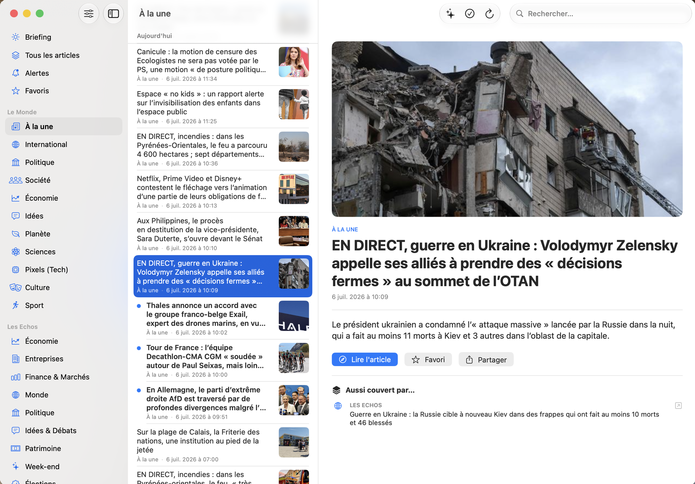

30TheNews
Multi-source news watch for macOS & iOSVeille d'actualité multi-source pour macOS & iOSmacOS 與 iOS 的多來源新聞追蹤
Your news, from every source, in one appTon actu, de toutes les sources, dans une seule app你的新聞，來自所有來源，只用一個應用程式
TheNews aggregates Le Monde, Les Echos and any RSS feed into a single macOS & iOS app — groups articles covering the same story, and delivers a daily briefing. Serverless, on-device, zero-dependency.TheNews agrège Le Monde, Les Echos et n'importe quel flux RSS dans une seule app macOS & iOS — regroupe les articles qui traitent du même sujet, et livre un briefing quotidien. Sans serveur, sur l'appareil, zéro dépendance.TheNews 把 Le Monde、Les Echos 與 任何 RSS 訂閱源 匯集到一個 macOS 與 iOS 應用程式——把報導同一主題的文章分組，並產出每日簡報。無伺服器、在裝置上執行、零依賴。
- PlatformsPlateformes平台
- macOS · iOS · iPadOS · watchOS · tvOS
- Built withTechnologie技術
- SwiftUI · SwiftData · CloudKit · WidgetKit
- DependenciesDépendances相依套件
- Sparkle-only dependencySparkle pour seule dépendance唯一依賴為 Sparkle
- LicenceLicence授權
- MIT

Custom RSS sourcesSources RSS personnalisées自訂 RSS 來源
Add any RSS feed beyond Le Monde & Les Echos. The catalog is dynamic — your feeds join in as another journal, grouped in the sidebar.Ajoute n'importe quel flux au-delà du Monde & des Echos. Le catalogue est dynamique — tes flux rejoignent l'app comme un journal de plus, groupés dans la sidebar.除了 Le Monde 與 Les Echos，還能加入任何訂閱源。目錄是動態的——你的訂閱源會像多一份報紙那樣加入應用程式，並在側邊欄分組。
Cross-source groupingRegroupement cross-source跨來源分組
"Also covered by…": the same event seen through other sources, detected on-device with a Jaccard similarity on titles and summaries.« Aussi couvert par… » : le même événement vu par d'autres sources, détecté sur l'appareil par similarité de Jaccard sur titres et chapôs.「其他來源也報導了……」：同一事件在其他來源的版本，於裝置上以標題與導言的 Jaccard 相似度偵測。
Daily briefingBriefing quotidien每日簡報
A condensed digest of the last 24 h — watch-list first, cross-source duplicates removed — with a notification at the time you pick.Un condensé des dernières 24 h — veille en priorité, doublons cross-source retirés — avec une notification à l'heure choisie.最近 24 小時的摘要——追蹤主題優先、移除跨來源重複——並在你設定的時間發出通知。
Widget & iCloudWidget & iCloud小工具與 iCloud
Home-screen widget (WidgetKit) on iOS & macOS, plus iCloud sync of your subscriptions, favorites, watch topics and custom feeds across devices.Widget d'écran d'accueil (WidgetKit) sur iOS & macOS, et sync iCloud de tes abonnements, favoris, sujets de veille et flux perso entre appareils.iOS 與 macOS 上的主畫面小工具（WidgetKit），並透過 iCloud 在裝置間同步你的訂閱、收藏、追蹤主題與自訂訂閱源。
On-device AI (Apple Intelligence)IA on-device (Apple Intelligence)裝置端 AI（Apple Intelligence）
Surface the main themes of any list, match watch topics semantically (catches rewordings, not just exact keywords), auto-summarize feeds with no description, and search in plain language — all via Foundation Models, fully on-device, with an automatic no-AI fallback.Dégage les grands thèmes d'une liste, fait correspondre les sujets de veille sémantiquement (capte les reformulations, pas seulement les mots-clés exacts), résume automatiquement les flux sans chapô, et cherche en langage naturel — via Foundation Models, 100 % sur l'appareil, avec repli automatique sans IA.歸納任何清單的主要主題、以語意比對追蹤主題（能捕捉改寫，而不只是完全相同的關鍵字）、自動摘要沒有導言的訂閱源，並以自然語言搜尋——全部透過 Foundation Models，100% 在裝置上執行，並可自動回退到不使用 AI 的模式。
Apple Watch appApp Apple WatchApple Watch 應用程式
A standalone watchOS companion: the top headlines from Le Monde and Les Echos, loaded live on your wrist.Une app compagnon watchOS autonome : les gros titres du Monde et des Echos, chargés en direct à ton poignet.獨立的 watchOS companion 應用程式：Le Monde 與 Les Echos 的頭條，即時載入到你的手腕上。
Apple TV appApp Apple TVApple TV 應用程式
A standalone tvOS companion: Briefing, all articles and every source's sections on the big screen, with thumbnails and full remote navigation.Une app compagnon tvOS autonome : Briefing, tous les articles et les rubriques de chaque source sur grand écran, avec miniatures et navigation complète à la télécommande.獨立的 tvOS companion 應用程式：簡報、所有文章與各來源的分類，在大螢幕上呈現，附縮圖並可完全用遙控器操作。
macOS screensaverÉcran de veille macOSmacOS 螢幕保護程式
A standalone screensaver with a rotating editorial briefing, installed automatically and kept in sync with every app update — no separate download or setup.Un écran de veille autonome avec un briefing éditorial en rotation, installé automatiquement et tenu à jour avec chaque mise à jour de l'app — aucun téléchargement ni réglage séparé.獨立的螢幕保護程式，輪播編輯簡報，隨應用程式自動安裝並在每次更新時同步——無須另外下載或設定。
Works on bothSur les deux plateformes兩個平台皆可
One shared SwiftUI codebase.Un codebase SwiftUI partagé.共用同一份 SwiftUI 程式碼。
| FeatureFonctionnalité功能 | macOS | iOS |
|---|---|---|
| Multi-source + custom RSSMulti-source + RSS perso多來源 + 自訂 RSS | YesOui是 | YesOui是 |
| Cross-source groupingRegroupement cross-source跨來源分組 | YesOui是 | YesOui是 |
| Daily briefing + alertsBriefing + alertes簡報 + 通知 | YesOui是 | YesOui是 |
| On-device AI (digest, semantic match, search)IA on-device (synthèse, matching, recherche)裝置端 AI（摘要、比對、搜尋） | YesOui是 | YesOui是 |
| Home-screen widgetWidget d'accueil主畫面小工具 | YesOui是 | YesOui是 |
| Apple Watch companionApp Apple WatchApple Watch 應用程式 | — | YesOui是 |
| Apple TV companionApp Apple TVApple TV 應用程式 | — | — |
| iCloud syncSync iCloudiCloud 同步 | YesOui是 | YesOui是 |
| ScreensaverÉcran de veille螢幕保護程式 | YesOui是 | — |
Apple Watch & Apple TV are separate standalone companion apps (not tied to macOS or iOS).Apple Watch et Apple TV sont des apps compagnons autonomes séparées (indépendantes de macOS ou iOS).Apple Watch 與 Apple TV 是各自獨立的 companion 應用程式（不依賴 macOS 或 iOS）。
Under the hoodSous le capot底層架構
Native Apple frameworks, nothing else.Que du natif Apple, rien d'autre.只有 Apple 原生技術，別無其他。
Serverless & privateSans serveur & privé無伺服器且私密
Parsing, watch, grouping and briefing all run on-device. No account, no telemetry.Parsing, veille, regroupement et briefing tournent sur l'appareil. Aucun compte, aucune télémétrie.解析、追蹤、分組與簡報都在裝置上執行。不需帳號，沒有遙測。
Dynamic catalogCatalogue dynamique動態目錄
Built-in journals + your RSS feeds,
Feed.catalog = builtIn + custom.Journaux fournis + tes flux RSS,Feed.catalog = builtIn + custom.內建報紙 + 你的 RSS 訂閱源，Feed.catalog = builtIn + custom。Almost zero dependencyQuasi zéro dépendance幾乎零依賴
SwiftData, XMLParser, UserNotifications, WidgetKit, CloudKit. Only exception: Sparkle, for macOS auto-update outside the App Store.SwiftData, XMLParser, UserNotifications, WidgetKit, CloudKit. Seule exception : Sparkle, pour l'auto-update macOS hors App Store.SwiftData、XMLParser、UserNotifications、WidgetKit、CloudKit。唯一例外是 Sparkle，用於 App Store 之外的 macOS 自動更新。
Open source (MIT)Open source (MIT)開源（MIT）
One shared SwiftUI codebase for macOS & iOS.Un codebase SwiftUI partagé macOS & iOS.macOS 與 iOS 共用同一份 SwiftUI 程式碼。